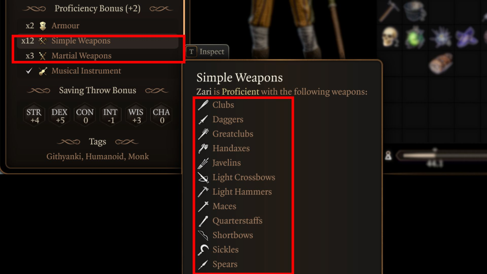
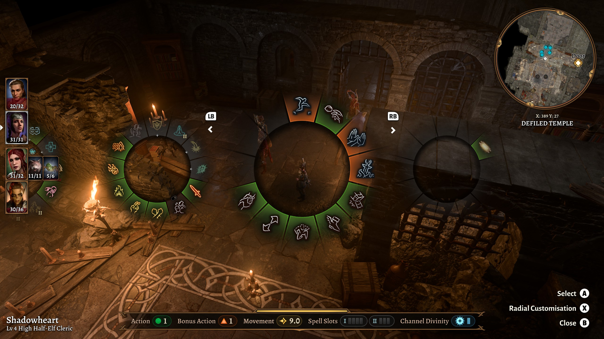

How To Play
Dice Rolls:
Since Baldur's Gate 3 is based on the tabletop game "Dungeons & Dragons," you roll a 20-sided dice everytime you make a skill check. To explain further, each character in Baldur's Gate 3 has a set of skills which consist of strength, dexterity, constitution, intelligence, wisdom, and charisma.
You have a certain amount of points to put into your skills, so you have to choose just a few to be proficient in. When attempting to succeed a task, such as lockpicking, trap disarming, specific dialogue options, saving throws, and attacks, the game gives you a number between 1-20 along with a 20-sided dice. If you roll
a number equal to or greater than the given number, you succeed. If you roll a number lower than the one given, you fail, which may or may not come with other consequences. Skill checks are one of the main components, that influence the outcome of your game, so it is essential to understand what is happening when you
encounter a skill check.
Proficiency:
Simply put on the Baldur's Gate 3 Wiki, "Proficiency is a representation of a creature's familiarity with something." Characters have proficiencies in certain skills that will be added on to dice rolls that involve that skill, as seen in the above picture. Additionally, certain races and classes begin
with proficiencies in categories of armors, weapons, and shields. For instance, a character may be proficient in medium armor which means that they cannot use heavy armor, but can use anything equal to or lighter than medium armor. If you are proficient in martial weapons, you can only use martial weapons. There are ways to
increase your proficiency in something, which can include leveling up, selecting specific feats, and equipping certain items.

Combat:
The combat in Baldur's Gate 3, just like in Dungeons & Dragons, is turn-based. Each creature rolls for initiative at the beginning of the encounter which decides the complete order of turns for the entire encounter with the highest number going first, and the lowest number going last. Depending on your proficiencies,
you will have different attacks available to you. But generally, each character gets a menu consisting of multiple wheels displaying their actions, attacks, potions, etc. In addition to fighting using your own character, you control and attack as your companions as well. Unless someone has specific feats or abilities, every creature gets to
use one action, one bonus action, and a certain amount of movement per turn. The way you battle is up to you as there are many different ways to go about it, but the end goal of combat is, of course, to defeat who or what you must defeat to progress.
